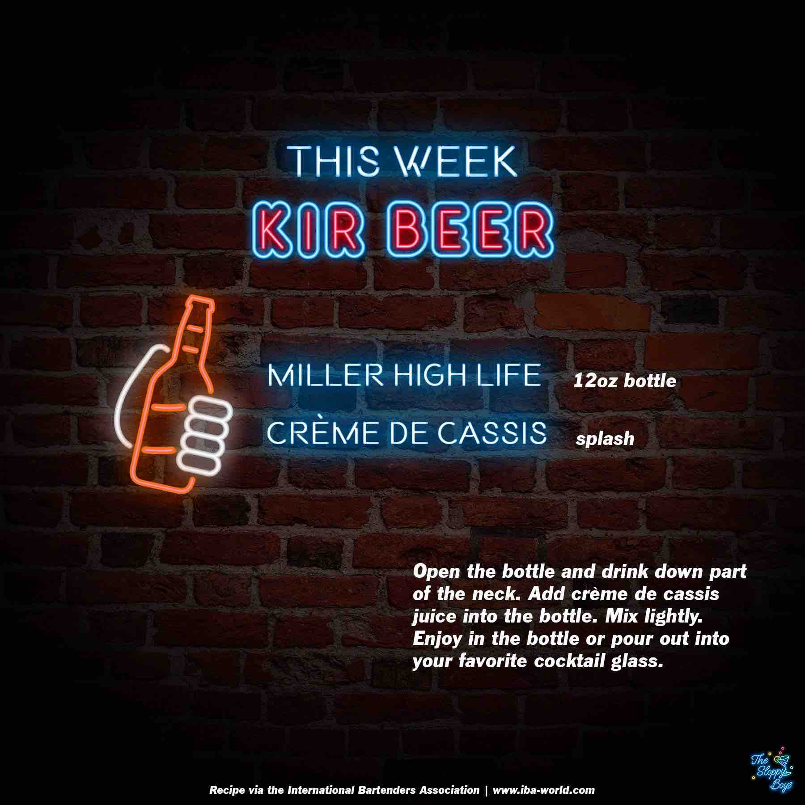

Kir Beer
Ingredients
- Miller High Life (1.5oz/45ml)
- Creme de Cassis (1oz/30ml)
Steps
- Open the bottle and drink down part of the neck.
- Add Creme de Cassis juice into the bottle.
- Mix lightly.
- Enjoy in the bottle or pour out into your favorite cocktail glass.
Notes